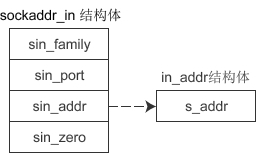

bind()和connect()函数：绑定套接字并建立连接
socket() 函数用来创建套接字，确定套接字的各种属性，然后服务器端要用 bind() 函数将套接字与特定的 IP 地址和端口绑定起来，只有这样，流经该 IP 地址和端口的数据才能交给套接字处理。类似地，客户端也要用 connect() 函数建立连接。
下面的代码，将创建的套接字与IP地址 127.0.0.1、端口 1234 绑定：
2) sin_prot 为端口号。uint16_t 的长度为两个字节，理论上端口号的取值范围为 0~65536，但 0~1023 的端口一般由系统分配给特定的服务程序，例如 Web 服务的端口号为 80，FTP 服务的端口号为 21，所以我们的程序要尽量在 1024~65536 之间分配端口号。
端口号需要用 htons() 函数转换，后面会讲解为什么。
3) sin_addr 是 struct in_addr 结构体类型的变量，下面会详细讲解。
4) sin_zero[8] 是多余的8个字节，没有用，一般使用 memset() 函数填充为 0。上面的代码中，先用 memset() 将结构体的全部字节填充为 0，再给前3个成员赋值，剩下的 sin_zero 自然就是 0 了。
16777343
为什么要搞这么复杂，结构体中嵌套结构体，而不用 sockaddr_in 的一个成员变量来指明IP地址呢？socket() 函数的第一个参数已经指明了地址类型，为什么在 sockaddr_in 结构体中还要再说明一次呢，这不是啰嗦吗？
这些繁琐的细节确实给初学者带来了一定的障碍，我想，这或许是历史原因吧，后面的接口总要兼容前面的代码。各位读者一定要有耐心，暂时不理解没有关系，根据教程中的代码“照猫画虎”即可，时间久了自然会接受。
sockaddr 结构体的定义如下：

sockaddr 和 sockaddr_in 的长度相同，都是16字节，只是将IP地址和端口号合并到一起，用一个成员 sa_data 表示。要想给 sa_data 赋值，必须同时指明IP地址和端口号，例如”127.0.0.1:80“，遗憾的是，没有相关函数将这个字符串转换成需要的形式，也就很难给 sockaddr 类型的变量赋值，所以使用 sockaddr_in 来代替。这两个结构体的长度相同，强制转换类型时不会丢失字节，也没有多余的字节。
可以认为，sockaddr 是一种通用的结构体，可以用来保存多种类型的IP地址和端口号，而 sockaddr_in 是专门用来保存 IPv4 地址的结构体。另外还有 sockaddr_in6，用来保存 IPv6 地址，它的定义如下：
bind() 函数
bind() 函数的原型为：int bind(int sock, struct sockaddr *addr, socklen_t addrlen); //Linux int bind(SOCKET sock, const struct sockaddr *addr, int addrlen); //Windows
下面以 Linux 为例进行讲解，Windows 与此类似。sock 为 socket 文件描述符，addr 为 sockaddr 结构体变量的指针，addrlen 为 addr 变量的大小，可由 sizeof() 计算得出。
下面的代码，将创建的套接字与IP地址 127.0.0.1、端口 1234 绑定：
//创建套接字
int serv_sock = socket(AF_INET, SOCK_STREAM, IPPROTO_TCP);
//创建sockaddr_in结构体变量
struct sockaddr_in serv_addr;
memset(&serv_addr, 0, sizeof(serv_addr)); //每个字节都用0填充
serv_addr.sin_family = AF_INET; //使用IPv4地址
serv_addr.sin_addr.s_addr = inet_addr("127.0.0.1"); //具体的IP地址
serv_addr.sin_port = htons(1234); //端口
//将套接字和IP、端口绑定
bind(serv_sock, (struct sockaddr*)&serv_addr, sizeof(serv_addr));
这里我们使用 sockaddr_in 结构体，然后再强制转换为 sockaddr 类型，后边会讲解为什么这样做。
sockaddr_in 结构体
接下来不妨先看一下 sockaddr_in 结构体，它的成员变量如下：
struct sockaddr_in{
sa_family_t sin_family; //地址族（Address Family），也就是地址类型
uint16_t sin_port; //16位的端口号
struct in_addr sin_addr; //32位IP地址
char sin_zero[8]; //不使用，一般用0填充
};
1) sin_family 和 socket() 的第一个参数的含义相同，取值也要保持一致。2) sin_prot 为端口号。uint16_t 的长度为两个字节，理论上端口号的取值范围为 0~65536，但 0~1023 的端口一般由系统分配给特定的服务程序，例如 Web 服务的端口号为 80，FTP 服务的端口号为 21，所以我们的程序要尽量在 1024~65536 之间分配端口号。
端口号需要用 htons() 函数转换，后面会讲解为什么。
3) sin_addr 是 struct in_addr 结构体类型的变量，下面会详细讲解。
4) sin_zero[8] 是多余的8个字节，没有用，一般使用 memset() 函数填充为 0。上面的代码中，先用 memset() 将结构体的全部字节填充为 0，再给前3个成员赋值，剩下的 sin_zero 自然就是 0 了。
in_addr 结构体
sockaddr_in 的第3个成员是 in_addr 类型的结构体，该结构体只包含一个成员，如下所示：
struct in_addr{
in_addr_t s_addr; //32位的IP地址
};
in_addr_t 在头文件 <netinet/in.h> 中定义，等价于 unsigned long，长度为4个字节。也就是说，s_addr 是一个整数，而IP地址是一个字符串，所以需要 inet_addr() 函数进行转换，例如：
unsigned long ip = inet_addr("127.0.0.1");
printf("%ld\n", ip);
运行结果：16777343

图解 sockaddr_in 结构体
图解 sockaddr_in 结构体
为什么要搞这么复杂，结构体中嵌套结构体，而不用 sockaddr_in 的一个成员变量来指明IP地址呢？socket() 函数的第一个参数已经指明了地址类型，为什么在 sockaddr_in 结构体中还要再说明一次呢，这不是啰嗦吗？
这些繁琐的细节确实给初学者带来了一定的障碍，我想，这或许是历史原因吧，后面的接口总要兼容前面的代码。各位读者一定要有耐心，暂时不理解没有关系，根据教程中的代码“照猫画虎”即可，时间久了自然会接受。
为什么使用 sockaddr_in 而不使用 sockaddr
bind() 第二个参数的类型为 sockaddr，而代码中却使用 sockaddr_in，然后再强制转换为 sockaddr，这是为什么呢？sockaddr 结构体的定义如下：
struct sockaddr{
sa_family_t sin_family; //地址族（Address Family），也就是地址类型
char sa_data[14]; //IP地址和端口号
};
下图是 sockaddr 与 sockaddr_in 的对比（括号中的数字表示所占用的字节数）：sockaddr 和 sockaddr_in 的长度相同，都是16字节，只是将IP地址和端口号合并到一起，用一个成员 sa_data 表示。要想给 sa_data 赋值，必须同时指明IP地址和端口号，例如”127.0.0.1:80“，遗憾的是，没有相关函数将这个字符串转换成需要的形式，也就很难给 sockaddr 类型的变量赋值，所以使用 sockaddr_in 来代替。这两个结构体的长度相同，强制转换类型时不会丢失字节，也没有多余的字节。
可以认为，sockaddr 是一种通用的结构体，可以用来保存多种类型的IP地址和端口号，而 sockaddr_in 是专门用来保存 IPv4 地址的结构体。另外还有 sockaddr_in6，用来保存 IPv6 地址，它的定义如下：
struct sockaddr_in6 {
sa_family_t sin6_family; //(2)地址类型，取值为AF_INET6
in_port_t sin6_port; //(2)16位端口号
uint32_t sin6_flowinfo; //(4)IPv6流信息
struct in6_addr sin6_addr; //(4)具体的IPv6地址
uint32_t sin6_scope_id; //(4)接口范围ID
};
正是由于通用结构体 sockaddr 使用不便，才针对不同的地址类型定义了不同的结构体。
connect() 函数
connect() 函数用来建立连接，它的原型为：int connect(int sock, struct sockaddr *serv_addr, socklen_t addrlen); //Linux int connect(SOCKET sock, const struct sockaddr *serv_addr, int addrlen); //Windows各个参数的说明和 bind() 相同，不再赘述。
关注公众号「站长严长生」，在手机上阅读所有教程，随时随地都能学习。内含一款搜索神器，免费下载全网书籍和视频。

微信扫码关注公众号